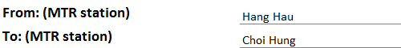
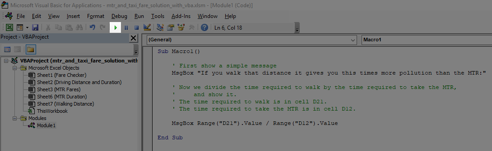

In this lab you will gain experience in the following areas:
Using cell formulas
Using IF function
and the error checking functions such as IFNA or ISNA to check whether the inputs are correctly entered
Using the VLOOKUP function to obtain useful values (e.g. MTR station name, MTR fare, and travelling time) from other Excel worksheets
Using the OR function to combine the comparisons
Using VBA
Creating a macro to calcuate and show some useful information
Assigning a combination of keys to trigger the macro
Using MsgBox to output the information
Using / to divide a number
Overview
In this lab, you will create a program to calculate the fare and travelling time between two MTR stations using the following three methods:
By MTR
This part has been given to you
By Taxi
You have to add formulas to make this part work
On Foot
You have to add formulas to make this part work
The calculated fare and duration can be compared among the three methods so that you can see which method is the most cost-effective way to travel between MTR stations
Here is an example display of the program:
Click on the image to see it in its original size
From this example you can see that it is inappropriate to take a taxi from Hang Hau to Choi Hung instead of taking the MTR
This is because taking a taxi is much more expensive (around 7 times per person) but the time saved is just a few minutes
In this lab, we do not consider the time to wait for the MTR as well as the time to walk through the MTR stations
The program requires the following inputs:
The starting MTR station name
The ending MTR station name
How many people will take a taxi?
How fast will you walk from one station to another?
The inputs are entered at the start of the worksheet called Fare Checker, like this:
There are five worksheets in the file: Fare Checker, MTR Fares, MTR Duration, Driving Distance and Duration, and Walking Distance, like this:
We will explain what each worksheet is created for:
Fare Checker
Click on the image to see it in its original size
This worksheet is the main display of the program
It contains the inputs to the program, at the top of the worksheet:
Based on the inputs the results are displayed in three different parts for three types of travelling method:
By MTR
By Taxi
On Foot
MTR Fares
Click on the image to see it in its original size
This worksheet contains the MTR fare table
The table is arranged like this:
Each row shows the fares required to travel from one MTR station to another
The From station and the To station are shown using the MTR station name
The From-To column is the concatenation of the From station and the To station separated by a dash
Three types of fares are shown in each row but you will need to use only two of them
MTR Duration
Click on the image to see it in its original size
This worksheet contains the MTR duration table, i.e. travelling time between two stations
The table is arranged like this:
Each row shows the duration to travel between two MTR stations
The From station and the To station are shown using the MTR station name
The From-To column is the concatenation of the From station and the To station separated by a dash
The duration is shown in a h:mm:ss format
The cell value is represented in the unit of day, e.g.
A value of 1 represents 24 hours
A value of 0.5 represents 12 hours
Driving Distance and Duration
Click on the image to see it in its original size
This worksheet contains the distance and duration to travel between two MTR stations by car
The table is arranged like this:
Each row shows the distance and duration to travel from one MTR station to another
The From station and the To station are shown using the MTR station name
The From-To column is the concatenation of the From station and the To station separated by a dash
If the distance and duration are not a number, i.e. '-', that means it is not allowed to drive between those two stations
For example, it is not allowed to freely drive from anywhere to Lok Ma Chau (because it is at the border)
Walking Distance
Click on the image to see it in its original size
This worksheet contains the walking distance between two MTR stations
The table is arranged like this:
Each row shows the duration to walk from one MTR station to another
The From station and the To station are shown using the MTR station name
The From-To column is the concatenation of the From station and the To station separated by a dash
If the distance is not a number, i.e. '-', that means it is not possible to walk between those two stations
For example, it is not possible to walk from Central to Tsim Sha Tsui (because the harbour is in the middle)
2. Check Whether the Inputs Are Correctly Entered
There are four inputs to the program:
Starting MTR station name
Ending MTR station name
Number of people taking a taxi
Walking speed
To make sure the user enters correct values for each of the inputs, we will use error checking functions and IF to check the inputs:
We will use IF, ISNA and VLOOKUP to check the correctness of the MTR station names, i.e. the starting and ending MTR station names
We will use IF to check for the correctness of the number of people in a taxi and the walking speed
2.1. Show an Error Message If the MTR Stations Are Not Correctly Entered
The user is required to enter a starting and an ending MTR station by the station names
However, there are 84 stations in total and the user may not be able to remember all the names
To help the user we will a formula to show an error message if he/she has entered a wrong station name
The idea is to search for the entered station name in the list of MTR stations
If the entered station is found in the list, no error message will be displayed, for example:

Hang Hau and Choi Hung are both valid MTR station names, so no error message is displayed
Otherwise, if the entered station does not exist it will be displayed an error message in red, for example:
HKUST and Saikung are not MTR stations, so an error message is displayed for each input
We can do the checking using a cell formula
Let's do this for the starting MTR station first
You need to enter a formula in the cell where the error message for the starting station should be displayed, i.e. cell C3
The idea is to look for the MTR station in cell B3 using VLOOKUP
The formula to look up the MTR station is as follow:
=VLOOKUP(B3, 'MTR Fares'!A:A, 1, FALSE)
B3 is the cell containing the starting station name
'MTR Fares'!A:A is the first column in the fare table (A:A means all cells in the column)
You need to use single quotes to quote the worksheet name, i.e. 'MTR Fares' instead of MTR Fare because there is a space in the name
The third argument is the column of the value to be returned, which is 1 (column A) in this case
When the fourth argument is FALSE that means the function returns a station name if found, otherwise return #N/A
For example,
if Central is entered in B3 the above VLOOKUP returns Central
if HKUST is entered in B3 the above VLOOKUP returns #N/A
If you enter the above formula in cell C3, the resulting content of the cell is not exactly what you want
That means you need to use some ways to change the display of the cell
Obviously, we do not really need to show the station name returned by VLOOKUP because the station name is already in cell B3
All we want to know is whether the MTR station exists; in other words, whether VLOOKUP returns #N/A or not
Because of that, you can use ISNA to enclose the VLOOKUP formula so that:
ISNA returns TRUE if the MTR station does not exist
ISNA returns FALSE if the MTR station exists
You then have to make a decision to display an error message when ISNA is TRUE, or display nothing when ISNA is FALSE
You can easily achieve that using an IF function
If you finish the formula for cell C3, you need to do the same checking for cell C4 for the ending MTR station
If you write your formula carefully you can simply copy and paste the formula from C3 to C4
To test your formulas you can try to enter different station names, some correct and some wrong, to see if the error message is shown appropriately
There is also something for you to think about: why don't you use IFNA to do this task?
2.2. Show an Error Message If the Numbers Are Not Correctly Entered
In addition to the MTR station names the user also needs to input the number of people in a taxi, as well as his/her walking speed
Both of these inputs are bound by their specific ranges like this:
Number of people in a taxi: 1 to 5
Walking speed: 4, 5 or 6
We can assume that the user only enters an integer, i.e. he/she won't enter 4.5 in the cells
To check the numbers, we can use an IF function with the correct condition
Here are examples of incorrect input numbers and their error messages:
Note that 'km/h' is automatically added by the cell formatting of the cell; the value of the cell is the number 1
To show the error message when the input is not correct, you simply need to come up with the correct condition
Let's use the first input as an example
You need to enter the formula in cell C6 where the error message will be shown:
When the number of people in a taxi is not correct, the value in cell B6 is either smaller than 1 or bigger than 5
"the value is either smaller than 1 or bigger than 5" is the condition that you need to build in the formula
Since there is an 'or' in the sentence you will need to use the OR function to combine the comparisons like this:
=OR(B6<1, B6>5)
If you enter the above formula in cell C6,
the cell will show TRUE when the number of people in a taxi is out of range or not valid
the cell will show FALSE when the number of people in a taxi is correctly entered
Based on the result of the condition, you can then use an IF formula to display an error message appropriately
After you have done the error checking for the number of people in a taxi, you can similarly work out how to do the same thing for the walking speed input
3. Look up and Calculate the Results Based on the Inputs
To help you understand how it works the MTR fare and duration have been done for you
You need to finish the calculation for travelling by taxi and on foot
3.1. Look up the MTR Fare and Travelling Time
The MTR fare and travelling time have been given to you in the Excel file
Let's understand how it works before we work on the other two travelling methods
The formulas used in the calculation of the MTR fare and travelling time look like these:
We will explain the four cells from A12 to D12 one by one:
Cell A12
This is the concatenation of the starting station name and the ending station name separated by a dash
The purpose of this cell is to act as the search key when we look for the fare and duration of travelling from one station to another
The corresponding column to search for in the data tables is the one having the same text, From-To
Cell B12
A VLOOKUP is used in this cell
This VLOOKUP function means the search for the adult Octopus fare based on the value of the From-To column
Here are the parameters of this VLOOKUP function:
This is the search key to look up for
The reference is cell A12, i.e. the From-To value, such as Choi Hung-Lam Tin
This is the table from where we want to search for the adult Octopus fare
'MTR Fares' is the worksheet containing the fare table
The table spans from column C to column F
The VLOOKUP function always searches for the key in the first column of a table
In this case, column C contains the From-To values
This means the VLOOKUP function returns the second column from the searched table
Therefore, the value in column D (adult Octopus fare) is returned by the function
A value of FALSE for the fourth parameter means the search will:
return the value in the desired column (column D in this case) if the search key is found in the table
return #N/A if the search key cannot be found
Cell C12
Similar to cell B12 this cell uses a VLOOKUP to search for the student Octopus fare
The difference between the VLOOKUP function in this cell and cell B12 is the value to be returned from the function
The formula in cell B12 returns the value in the 2nd column (i.e. adult fare) whereas the function in this cell returns the value in the 4th column (i.e. student fare)
Cell D12
Similar to the VLOOKUP used in the other two cells this cell uses a VLOOKUP function to return the duration of travelling from one station to another
This is based on a table in the MTR Duration worksheet as shown in the parameter 'MTR Duration'!C:D
Based on the above examples from the MTR result you should be able to create similar results for travelling by taxi and on foot
3.2. Look up the Taxi Travelling Distance and Time
We have seen how to use VLOOKUP in the MTR result
We will now use the same technique to look up the taxi travelling distance and time in cell B16 and cell D16 respectively
Both the distance and time for driving from one station to another are listed in the driving table in the Driving Distance and Duration worksheet
Looking at the worksheet you will see the table can be referred to by:
'Driving Distance and Duration'!C:E
When you write your VLOOKUP function you can select the table using your mouse instead of directly typing the above reference
The formulas in cell B16 and cell D16 are almost the same because they look up the same table
The difference is cell B16 requires the value in the second column of the table whereas cell D16 requires the value in the third column
Here is an example of the taxi result after looking up the distance and time:
The calculation of the taxi fare is given in the Excel file when the distance has been looked up successfully
However, the fare calculation does not take into account additional charges such as tunnel fees and baggage fees
3.3. Look up the Travelling Distance on Foot
After finishing the MTR and taxi results we will finish the lab by looking up the travelling distance between two MTR stations on foot
Since we have seen how VLOOKUP is used in the previous two results it should be straightforward to apply the same technique here
The information of the walking distance is stored in a table in the Walking Distance worksheet
You can then construct a VLOOKUP function in cell B21 to look up the walking distance
Once the walking distance is shown the time to walk between the stations will be automatically calculated, for example, like this:
The walking time is calculated based on the walking speed of the user entered at the start of the Fare Checker worksheet
4. Create a Macro to Calculate and Show Some Useful Information
This diagram shows the way in which the macro will be used (after we have finished creating it):
Click on the image to see it in its original size
This video shows the general idea (there's no sound):
Please note that the calculation will not work if the walking duration is not defined (as indicated by a "-" in the table)!
The number of people is 3 and the walking speed is 5 km/h. These two values remain unchanged for the rest of the video
At the beginning of the video, the source MTR station is Hang Hau and the destination MTR station is Choi Hung
A macro is triggered to compute the result of D21/D12 (from Hang Hau to Choi Hung)
The source MTR station is updated to Diamond Hill
The destination MTR station is updated to Hang Hau
A macro is triggered, and the updated result of D21/D12 (from Diamond Hill to Hang Hau) is shown
To do any kind of work with VBA you need to select and use the Developer tab:
Click on the image to see it in its original size
The Developer tab looks like this:
Click on the image to see it in its original size
Can you see it in your Excel? If so, move on to the next stage
If you can't see it then you need to tell Excel to show it
To do that:
Select File
Select Options
Select Customise Ribbon
Make sure that 'Developer' has a tick next to it, on the right side:
Click on the image to see it in its original size
Select OK
4.2. Start Creating a Macro
In this stage we will start making a macro (which doesn't do anything yet)
Here's one way to start making a macro:
Select Macros in the Developer tab
Click on the image to see it in its original size
A window like this will be shown:
Click on the image to see it in its original size
In the 'Macro Name' box at the top, enter the name of the macro - let's enter 'Macro1'
Click on the image to see it in its original size
Now select 'Create'
Click on the image to see it in its original size
You will see the following display:
Click on the image to see it in its original size
The VBA editor is showing you the content of the macro
As you can see, your macro has a start (Sub Macro1()) and an end (End Sub)
But there's no code between the start and the end - so if we run the macro nothing will happen!
4.3. Add Code into the Macro So It Makes a Calculation and Displays Messages in Small Windows
For this lab, let's use this code for the macro:
Sub Macro1()
' First show a simple message
MsgBox "If you walk that distance it gives you this times more pollution than the MTR:"
' Now we divide the time required to walk by the time required to take the MTR,' and show it.' The time required to walk is in cell D21.' The time required to take the MTR is in cell D12.
MsgBox Range("D21").Value / Range("D12").Value
End Sub
You need to replace your macro code (which doesn't do anything) with the macro shown above (which does something)
Here's how to do that:
Look at your current macro code in your Excel file
If it is not already shown, select Macros in the Developer tab, select your macro from the list, then select
Edit
Select your macro in your Excel file
select the macro code, including Sub Macro1() and End Sub
Delete your macro in your Excel file
do right click » cut (or do Ctrl+x on a PC, ⌘+x on a Mac)
Copy the content of the macro code shown above in this web page
select everything including Sub Macro1() and End Sub, copy it
Paste the content of the macro code into the macro
Select right click » paste (or do Ctrl+v on a PC, ⌘+v on a Mac)
At this stage we have a macro which does something useful
If you want to quickly test what the macro does, click anywhere inside the macro, and then select the green triangle shown below:
 Click on the image to see it in its original size
However, the calculation will not work if the walking duration is not defined (as indicated by a "-" in the table)!
Pressing the triangle is just a 'quick test' way to run the macro
The common way to run a macro inside a spreadsheet is to press a combination of keys on the keyboard
Let's set that up in the next stage
4.4. Add the Key Combination To Trigger the Macro
Close the VBA editor and return to the usual Excel worksheet display
Select File » Close and Return to Microsoft Excel
Click on the image to see it in its original size
or: Kill the window
or: press Alt+q on the keyboard
or: pressing Alt+Tab repeatedly will switch between the two windows
Now let's add the keyboard shortcut to trigger the macro
Select Macros on the Developer tab, a window like this will be shown:
Click on the image to see it in its original size
Select the macro you just created, then select Options
Click on the image to see it in its original size
You will see a window like this:
Click on the image to see it in its original size
Select the small 'Shortcut key:' box and press the key combination that you want to use to trigger the macro
E.g. if you want Ctrl+Shift+A to trigger the macro then you would enter Shift+A in the box (because using Ctrl is compulsory)
On a Mac computer, you would use Option+Cmd+Shift+A instead
Click on the image to see it in its original size
The letter 'A' is chosen here simply because it is the first letter of 'air pollution'
Then select 'OK', then select 'Cancel'
You have now added the keyboard combination to trigger the macro
4.5. Try out the Macro
Now you can try out your macro by doing that key combination to trigger the macro
If you followed what we described above then the key combination is Ctrl+Shift+A on a PC or Option+⌘+Shift+A on a Mac
To really test the macro, change the start/end journey destinations in the main Excel worksheet, then trigger the macro again
You should see that the number shown in the small window changes
5. Save the Excel File So That It Keeps the VBA Code
Be careful when you save your Excel file!
There are many different options when you save an Excel file
If you are not careful, your work will be saved without the VBA code
If you do that then your VBA code is gone forever!
That would be a disaster when you do assignments which use VBA
Here's how you save the file in an Excel format which keeps the VBA code
Select File
Select Save As
Select the directory where you want to save the file
In the 'File name' area enter the name that you want to use for the file e.g. lab2
In the 'Save as type' area select 'Excel Macro-Enabled Workbook'
Click on the image to see it in its original size
Press Save
This will make a file called lab2.xlsm
Files which end in .xlsm are Excel files which can include VBA code
Submission
You don't need to submit this work, but you may keep a copy of your own work for your reference
Anything you save on the lab computer will probably be automatically wiped when you leave the computer!
So make sure you save a copy away from the lab computer
For example, you can put your work in your USB disk (if you have one) or email a copy to yourself


{kind=link}
{kind=link}
{kind=link}
{kind=link}
{kind=link}
{kind=link}
{kind=link}
{kind=link}
{kind=link}
{kind=link}
{kind=link}
{kind=link}
{kind=link}
{kind=link}
{kind=link}
{kind=link}
{kind=link}
{kind=link}
{kind=link}